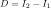
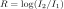
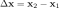
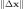

Method
Prerequisites: precise co-registration (sub-pixel), radiometric consistency, similar acquisition conditions.
- Image differencing:

; unchanged pixels cluster around 0, changes in the tails. - Log-ratio (SAR):

: turns multiplicative speckle into additive noise and makes the result independent of the absolute level. - Change vector analysis:

; magnitude
says whether something changed, direction (angle) says what kind of change (vegetation loss, flooding). - Thresholding: on the magnitude, manually, by Otsu, or by Bayes with a two-component mixture (changed, unchanged).
- Post-classification comparison: classify both dates independently and compare labels: gives "from–to" classes but errors of both maps multiply.
Example
d = np.sqrt(((X2 - X1) ** 2).sum(axis=0)) # CVA magnitude over bands
changed = d > threshold_otsu(d)
sar_lr = np.log((I2 + 1e-6) / (I1 + 1e-6))Intuition
Hold two images of the same place up to the light: what does not line up is change — provided the images were aligned and exposed the same way.
Pitfall
Not every difference is a change of interest: phenology (seasons), soil moisture, sun angle, misregistration at edges all produce "changes". Comparing images from the same season reduces the first.